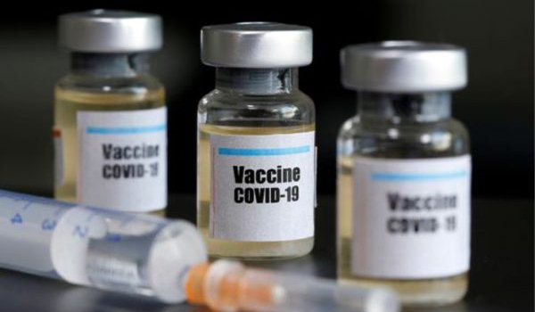
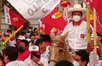
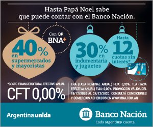

¿Quién gana con el Covid-19?¿Telecomunicaciones y el sector biotecnológico-farmacéutico?– Por Lina Merino y Alfio Finola
Los conceptos vertidos en esta sección no reflejan necesariamente la línea editorial de Nodal.Consideramos importante que se conozcan porque contribuyen a tener una visión integral de la región.
Lina Merino y Alfio Finola*
En la actualidad de lo único que se habla, prácticamente, es del Covid-19 ¿Cómo se previene?¿Cómo se contagia?¿Es necesario el aislamiento?¿Hay suficientes respiradores e insumos médicos?Incluso se ensayan números sobre las pérdidas a nivel económico y las transformaciones a nivel social que esta crisis causará.
Sabemos quiénes serán los perdedores, pero ¿quién saldrá ganando en este contexto?¿Dónde se encuentra metida y revolviendo la mano invisible del mercado?Los campos de la tecnología y farmacología son terrenos que este contexto amerita observar.Por todo lo que se ha dicho sobre el tema, es necesario pensar en ello, en los escenarios y batallas que será necesario dar.
Más allá del bombardeo de información sobre lo que minuto a minuto está pasando en cada país respecto del Covid-19, podemos observar que:
El mundo nunca se ha mantenido estático.Siempre se encuentra en un proceso de cambio continuo donde las sociedades dejan de ser, hacer o consumir algo, para pasar a ser, hacer o consumir otra cosa.Y la pandemia aceleró estos procesos en un mundo que ya se venía reconfigurando al calor de la denominada cuarta revolución industrial.
Mientras un importante número de petroleras, aerolíneas y sectores industriales se enfrentan a posibles bancarrotas (y seguramente van camino a una mayor concentración del sector); las economías de plataformas, los servicios de telecomunicaciones conducidos por las Big Tech han tenido crecimientos sobresalientes junto con las grandes corporaciones de la biotecnología y desarrollo farmacéutico.Esta nueva crisis no necesariamente indica un colapso del sistema capitalista, sino una titánica puja por el cambio en las manos que lo conducen.
Principalmente, dos sectores de la economía están transitando un acelerado crecimiento y son los que (se) alimentan (de) la vanguardia en CyT: el de las telecomunicaciones y el biotecnológico-farmacéutico.
Las disputas tecnológicas y farmacéuticas detrás de la pandemia
Desde la situación de pandemia se ha logrado implementar forzosamente el uso masivo del teletrabajo, accesos remotos y portales online.Las estadísticas muestran que, desde el inicio de la cuarentena, se han experimentado incrementos de tráfico de datos cercanos al 40%, lo que se debe principalmente al consumo de videoconferencia y llamadas desde WhatsApp, Skype u otras plataformas.
Adicionalmente, existe una disputa por el control de este sector.En este sentido, se puede señalar el caso de la denominada 'guerra comercial' chino-estadounidense por el desarrollo y manejo de las nuevas tecnologías (5G, Internet de las Cosas, Inteligencia Artificial y Big Data).
Con estos instrumentos no sólo los individuos son subordinados sino también todo el entramado productivo.Quien tenga la capacidad de imponer intereses y niveles de consumo, conducirá no sólo a los consumidores, sino también el destino de los que tienen que producir esas mercancías y servicios y sus mecanismos de comercialización (realización de la plusvalía).
Se ha demostrado que gran parte de los trabajos no requieren como condición indispensable la presencia física de un gran número de personas y pueden ser mediados por las telecomunicaciones.Estos nuevos modos de producción, basados en el aislamiento, allanan el camino a una alienación y profundización del individualismo en el plano social y político y profundizan cambios en la estructura económica con mayor dependencia a las grandes empresas de la robótica y telecomunicaciones.
En Argentina, como en el resto de la región, estos sectores no están desarrollados en forma soberana.Es momento para empezar a plantearlo.
La posible cura al Covid-19
El otro gran conjunto de conocimiento científico que consideramos central en la disputa estratégica de este nuevo momento de la sociedad es el biotecnológico-farmacéutico.Éste es un complejo de desarrollo tecnológico que, además de controlar la 'salud' humana, también contempla la producción de alimentos (vegetales y animales).
En los últimos días, se han publicado una serie de potenciales tratamientos para el nuevo Covid-19, en una carrera contrarreloj mundial no solo por frenar un virus que cada día devasta más la economía global, sino también por demostrar quién se encuentra a la vanguardia en desarrollo científico.
Entre estos tratamientos se reportan el antiparasitario Ivermectin que, aseguran, mata alCcovid-19 en 48 horas (publicado en Antiviral Research); el Interferón Alfa 2b recombinante, con tecnología cubana producido en la empresa mixta Chang Heber, utilizado en China para el tratamiento contra el COVID-19, y otros 70 fármacos que se proponen como candidatos para frenar este tipo de coronavirus, dentro de los cuales existen unas posibles 20 vacunas en investigación.
Si bien este panorama parece prometedor, el desarrollo de la cura puede llevar varios meses y la accesibilidad al mismo para el conjunto de la población corre el riesgo de quedar atrapada en la lógica mercantil.Es decir, la disputa estará entre la especulación de hacer un negocio de la cura o ponerlo a disposición en forma accesible para toda la humanidad.
Un dato relevante en este tema es que la Administración de Drogas y Alimentos estadounidense (FDA, por sus siglas en inglés) otorgó el estatus de medicamento 'huérfano' para el remdesivir, uno de los tantos que se están probando como tratamientos potenciales para el coronavirus.Ese estatus de 'orfandad' implica conceder el monopolio de su producción, incluso con beneficios impositivos, durante siete años.
La compañía productora del remdesivir, beneficiada por las decisiones de la administración Trump, es la farmacéutica Gilead Sciences, un holding donde juegan las inversiones de los gigantes financieros globales.Blackrock PLC, Vanguard Group y Capital Research Global Investors, que son las entidades que controlan la composición accionacionaria de la compañía.
Días después, y luego de que el demócrata Bernie Sanders denunciara la situación, Gilead Sciences tuvo que rechazar la designación de medicamento huérfano, renunciando a la exclusividad para la producción y comercialización del tratamiento.
No es un debate menor.Lo que allí se está discutiendo es quién logra desarrollar la cura y a quiénes serán los beneficiarios de la cura y de su rédito económico.Es decir, quién 'ganará' esta carrera.En ese marco, la puja por el desarrollo científico-tecnológico se da entre dos polos: entre aquellos que pretenden hacer de la salud un negocio (donde hay disputas al interior de éste por quién se lo queda) y quienes entendemos la salud como un derecho.
Por esto, para no caer en una neutralidad instrumental y reivindicar la ciencia por sí misma, debemos asumir la responsabilidad de posicionarnos frente a la realidad que estamos atravesando.En este sentido, el control o conducción sobre el desarrollo de las telecomunicaciones y la producción de fármacos y biotecnología, así como de todo el espectro de la producción de conocimiento, son condiciones indispensables para erigirse como pueblos soberanos.
[*] Merino es licenciada en Biotecnología y Biología Molecular (UNLP) y Doctora en Ciencias Biológicas (UNLP).Finola es licenciado y profesor en Geografía (UNRC).Ambos, investigadores del Observatorio de Ciencia y Tecnología, asociado al Centro Latinoamericano de Análisis Estratégico (CLAE www.estrategia.la).
VOLVER
Posted On: 2020-04-12T20:00:00



Content Date: 2020-04-12
Download Date: 2021-05-13
Document ID: L0C04C9SB